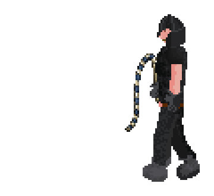

A free public RuneScape Classic server
RSC: Spoiled Milk
Absolutely Not Preserved.
Come hang out, soak up the nostalgia, and see what happens when an old favorite gets a few thousand new items, reworked combat, and entirely new skills. It's free, open source, and hosted for anyone who wants to drop in.
- Freeto play
- Opensource
- v0.3.3current release
Primary asset slot
Hero gameplay image or short loop
Preferred crop: 16:10 landscape
You remember this place. Mostly.
Feels familiar, doesn't it?
This nostalgia is hitting the spot, isn't it?
It is still the RSC world you remember. We just couldn't resist tinkering with the combat, equipment, skills, progression, and quite a lot else.
Release baseline: v0.3.3. Remaining draft claims and links will be checked again before publication.
What has changed?
The RSC you remember,
plus quite a bit we couldn't leave alone.
01 / Combat
Bring a few friends. The monsters did.
Melee, Ranged, and Magic all work in fights involving multiple players and enemies. Area attacks, new weapon families, summons, and support magic give everyone more to do than wait their turn.
Have a look at combat
Abyssal Whip with Dark beast hide armour
02 / Equipment
There is a lot more stuff to find.
New weapons, armor, tools, jewelry, resources, and crafting paths mean there is almost always another odd or useful thing waiting around the corner.
Feature asset 03
Worship, Devotion, or Cleric interface
4:3 or landscape screenshot
03 / Worship
Prayer had some growing up to do.
The familiar skill becomes Worship, tying redesigned prayers to Devotion, offerings, equipment, Blessing, and Cleric spells that can help your friends.
Feature asset 04
Enchanting or Summoning gameplay
One focused action, not a busy collage
04 / Skills
Yes, there are entirely new skills.
Enchanting and Summoning join expanded production paths, useful equipment effects, new guilds, and plenty of reasons to try a different way of playing.
Feature asset 05
Updated world or scenery screenshot
Wide environmental composition
05 / World
It still feels like home.
Updated scenery, equipment, creatures, effects, and multi-level environments make the world look better without sanding away the slightly peculiar character we came back for.
Now in the game
The Slayer Tower has opened its doors.
There are new assignments to take, creatures to track down, and equipment worth bringing home. Pick a name below to meet some of the new locals. They are not especially pleased to see you.

Slayer creature
Abyssal demon
One of eight new animated creatures waiting in the released Slayer content.
Showcase animations present the released artwork clearly; they are not recordings of exact in-game combat timing.
Why “Spoiled Milk”?
The milk was never going to stay preserved.
Open RSC names its builds after foods, including RSC Cabbage and RSC Kale. It also offers RSC Preserved: the untouched vanilla experience.
Spoiled Milk is built on Open RSC, but it is emphatically not preserved. The name is a thank-you to the project underneath it and a small warning that this bottle contains something rather different.
Still growing
A few things on the workbench.
We're still tinkering. These are a few familiar places currently finding their way into Spoiled Milk.
God Wars sprite sheet
God Wars Dungeon
We're seeing what the old faction war might look like with Spoiled Milk's combat and equipment.
Barrows sprite sheet
Barrows Brothers
Six familiar brothers, old crypts, and plenty of room to make the trip underground feel new again.
Future plans, names, visuals, and details may change during development.
Come hang out
Fancy another wander around?
Download the client, read about what changed, or drop into our small Discord for some friendly chatter.
Get the game
Download Client
Official GitHub release ↗
Come say hello
Join Discord
Durable invite needed
Learn the systems
Read the Wiki
Player guides ↗